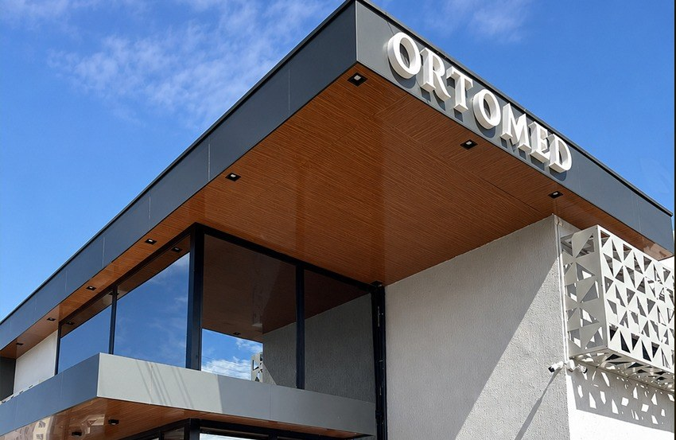
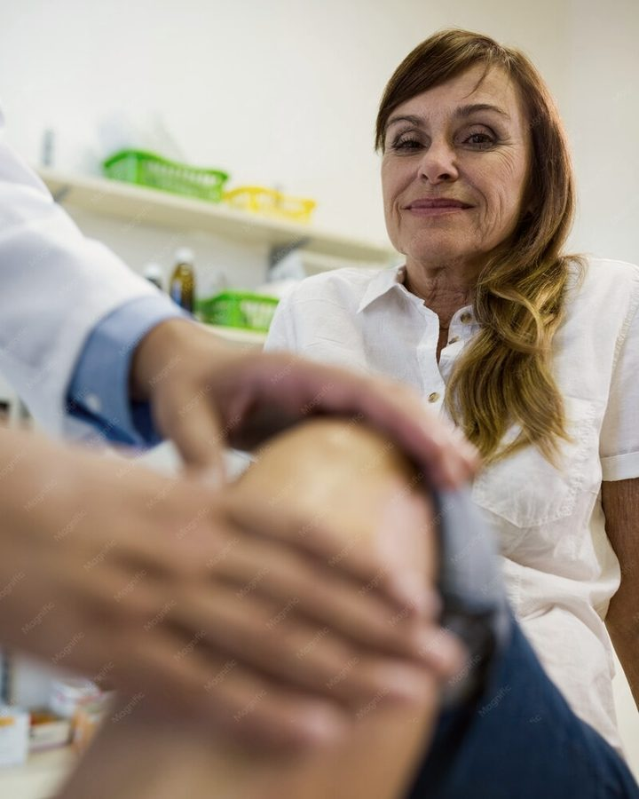
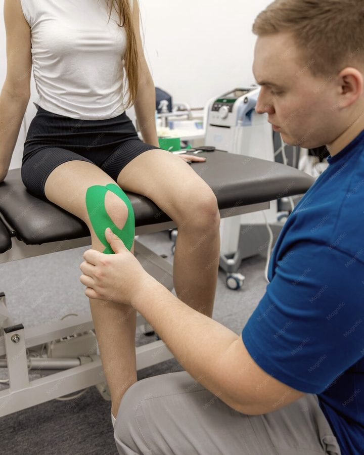
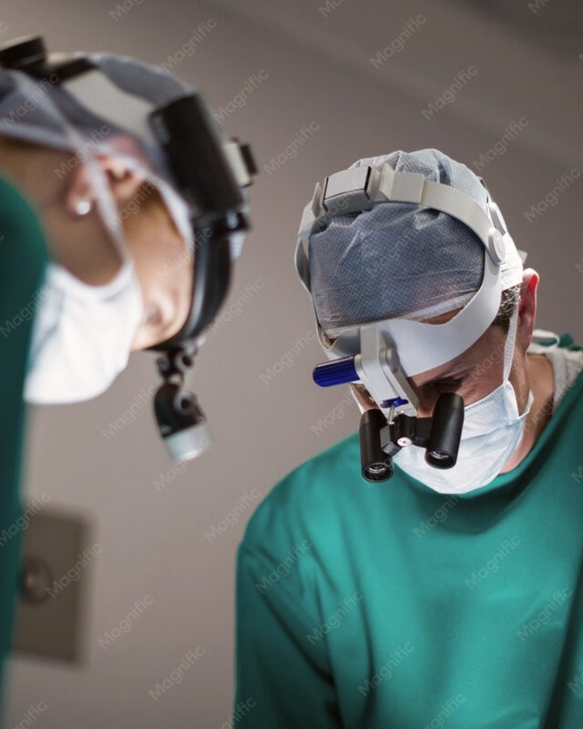
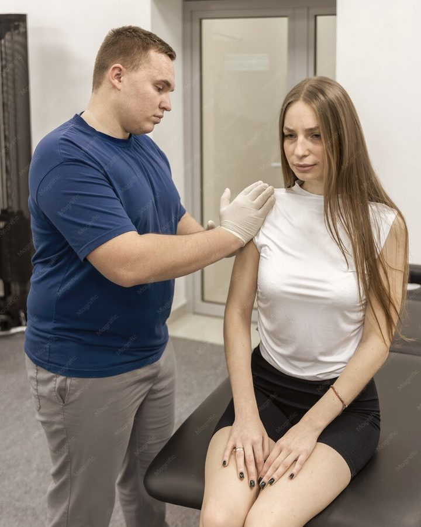

Ortopedia
Ortopedia
Agenda aberta no novo consultório
Cuidado que devolve o seu movimento
Mais que uma clínica. A Ortomed nasceu da experiência, da dedicação e do sonho de oferecer um atendimento mais próximo e humanizado.


- 3 especialistascom registro de especialista (RQE)
Vilhena · ROJardim das Oliveiras
+7
anos cuidando de vidas pela Ortopedia

Um espaço feito para acolher
Ambiente preparado para proporcionar conforto, segurança e tranquilidade.

A Clínica
Fale com a nossa equipe
Ortopedia e Traumatologia de alta especialização
Cuidamos da sua saúde musculoesquelética, auxiliando na prevenção, diagnóstico e tratamento de diversas condições ortopédicas, com atenção e responsabilidade em cada etapa do acompanhamento.
+7anos de experiência em Ortopedia
03especialistas no corpo clínico
06áreas de atuação
100%agendamento pelo WhatsApp
Nossa equipe
Corpo clínico especializado
A Ortomed reúne profissionais com formação e registro de especialista (RQE) em Ortopedia, Traumatologia, Cirurgia Geral, Bariátrica e do Aparelho Digestivo.
Ortopedia
Cirurgia
Dr. Fábio Yonamine
Bariátrica · Aparelho Digestivo · Cirurgia Geral
CRM/MT 4160 · RQE 2837 · RQE 5168
Agendar horário
Cirurgia
Áreas de atuação
Explore nossas especialidades
Da avaliação ao tratamento cirúrgico, reunimos em um só lugar as especialidades que cuidam da sua mobilidade e da sua qualidade de vida.

01Ortopedia
Prevenção, diagnóstico e tratamento das condições que afetam ossos, articulações e músculos.
Agendar ↗
02Traumatologia
Fraturas, entorses e lesões, com acompanhamento próximo até a recuperação completa.
Agendar ↗
03Cirurgia Bariátrica
Avaliação e condução cirúrgica do tratamento da obesidade, com suporte em todas as etapas.
Agendar ↗Aparelho Digestivo
Cirurgia para condições de esôfago, estômago, fígado e intestino.
Agendar ↗Cirurgia Geral
Consulta, indicação cirúrgica e acompanhamento pré e pós-operatório.
Agendar ↗
06Avaliação e retorno
Consultas de avaliação, segunda opinião e acompanhamento contínuo do tratamento.
Agendar ↗
Como funciona
Do primeiro contato à recuperação
-
1
Agende pelo WhatsApp
Fale com a recepção, escolha o especialista e o melhor horário para você.
-
2
Consulta e diagnóstico
Avaliação completa, com tempo para ouvir, examinar e explicar cada detalhe.
-
3
Tratamento e acompanhamento
Um plano feito para o seu caso, com retorno e suporte até a recuperação.
Depoimentos
O que dizem nossos pacientes
A confiança de quem passa pela Ortomed é o que move o nosso trabalho. Deixe também a sua avaliação e ajude outras pessoas a encontrar o cuidado certo.
★★★★★
Fui muito bem atendido desde a recepção. O médico explicou o diagnóstico com calma e o tratamento resolveu a dor no joelho.
★★★★★
Clínica nova, limpa e organizada. Fui atendida no horário marcado e saí com todas as minhas dúvidas respondidas.
★★★★★
Atendimento humano de verdade. Acompanharam meu pós-operatório de perto e sempre responderam pelo WhatsApp.
Nossa estrutura
Moderna e acolhedora
Um novo espaço pensado para cuidar da sua saúde e da sua qualidade de vida. Estamos prontos para receber você e sua família.
- Recepção confortável e climatizada
- Consultórios equipados para avaliação ortopédica
- Fácil acesso na Av. Presidente Nasser
- Atendimento por agendamento

Contato
Ficou com alguma dúvida? Estamos aqui.
Estamos na Av. Presidente Nasser, no Jardim das Oliveiras. Chame no WhatsApp para agendar ou venha conhecer a clínica pessoalmente.
 Aponte a câmera do seu banco
Aponte a câmera do seu banco
Pagamento
Pague sua consulta com Pix
Escaneie o QR Code ou copie a chave abaixo. O pagamento cai direto na conta da clínica, em nome de Ortomed Vilhena.
Chave CNPJ
61.031.445/0001-23
O botão copia o código Pix copia e cola completo.